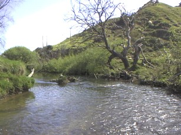
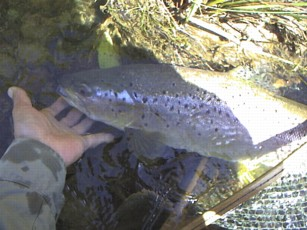

釣行日誌 ＮＺ編
春、西海岸、河口近く （その５）
ブラウンが逃げ込んだ上流側の淵は、それほど深くなく、せいぜい腰の深さまでである。障害物もなく流勢も穏やかで、ここで遊ばせながら力の弱るのを待って取り込めれば.........というのがこちらのシナリオである。
というより、この淵の中でコトを納め、下流側へだけは走られたくないのが本音である。下流側の淵の両岸には、灌木がびっしりと生えており、そこに洪水で流されてきた流木が積み重なって、見るからにおぞましい暗がりを形成している。あそこへ潜られた場合、まずこちらの勝ち目は無い。おまけに流れ込みの中央には、流れてきた倒木の根っこが顔を出しているのが遠目に見える。あの倒木の枝はいやらしいほどにこんがらがって淵の中に張り巡らされているに違いない。

上流の淵の中を右往左往して抵抗しているブラウンはいまだ姿を見せない。淵尻に立ちロッドを高く掲げて鱒の引きに抵抗する。ぐねりぐねりと重い捻転がティペットに伝わってくる。
しばらくこらえていると、鱒の黒い影が水面近くに寄ってきた。少々早いかと思われたが、ここで一気に勝負をかけるべくランディングネットを構え、余分のリーダーを巻き取る。まだ余力を残していそうな気配のブラウンが、淵尻の浅瀬をこちらに寄せられてくる。
『せぇ～の！』
ネットを差し出した瞬間、人影を気取ったブラウンが猛然とダッシュする。下流から回り込んでヤツが逃げ下る進路をふさいでいたはずだったが、茶色の塊はそんな努力をあざ笑うかのようにチャラ瀬の中をしぶきを上げて突っ走り、ラインを引き出しながら一番行って欲しくない流木のかたまりの方へ突入してゆく。
『あぁ～ダメダメそこはダメ！』
などと心中にて叫びつつ、慌ててリールを巻きながら鱒に付いて下流へ下る。流木から鱒を引き離すべく思い切りロッドでこらえつつ下っていくと、流木の根っこと対岸の間の深みへラインが突き刺さり、その向こうで鱒が反転しているようだ。とても深くてそのコースは歩けないのが見て取れたので、ロッドを頭上に掲げ、ラインが障害物に絡まないようにしておいて体はこちら岸の浅瀬を下る。なんとかラインは絡まずに倒木の枝をクリアし、下流の淵の真ん中まで来ることができた。鱒は、中央の深みの底に張り付いて動かない。
『うう、ここまでこれたのはラッキー。さてこれからどうしよう...』
深い緑色の淵の中で、鱒の体側が黄金色に輝く。体をくねらせるグネングネンというサイクルが大きく 、なおかつ重みがあることがよくわかる。これなら60cmクラスであろう。
ロッドのバット部分を右手で支えていると、なおも数回のダッシュを繰り返す。春先からこんなに太っているだけになかなかパワーが尽きない。あまり粘られては、ティペットも心許ないし、針先も伸ばされそうで怖い。
グネリグネリ。ドスンバタン。ギュイーン。
対岸の灌木の根っこへ目指した最後のダッシュを堪えると、ようやく鱒の頭が水面上に出た。でかい。ランディングネットがあまりに小さく見える。頭から寄せつつ小さいネットで一気にすくう。鱒の重量がネットの柄を通して伝わってくる。反動でガックり気が抜ける。
『終わったぁ.............』
よろよろとネットを水に浸しながら浅瀬に戻り、鱒の頭を上流に向けて横たえる。茶褐色の背中に斑点が散らばり、ブラウンにしては銀色の鱗が鮮やかである。すぐ近くの河口で、ホワイトベイトを飽食していたのであろうか？

冷たい流れに掌を浸し、ばかでかい胸ビレや膨らんだ腹部を見つめていると、突き動かされるように食欲がわいてくる。
『食う』『逃がす』『食う』『逃がす』『食う』『逃がす』『食う』『逃がす』『食う』『逃がす』『食う』『逃がす』『食う』『逃がす』『食う』『逃がす』
一瞬の間に30回ほど逡巡を繰り返し、そのブラウンのあまりのコンディションの見事さに、思い切ってネットを裏返す。ゆっくり泳ぎ出た鱒は、いったん流れ込みのそばで躊躇したのち、対岸の深みへ一気に消えていった。
ネットの水気を振り払うと、獲物の消えた軽さがひときわ虚ろに感じられる。
あの１尾をキープして、マーティンさん一家へのてみやげにしていたら、と最後まで迷わせたのも、丸々と太ったコンディションの見事さだったのだ。
釣行日誌ＮＺ編 目次へ
サイトマップ
ホームへ
お問い合わせ